Warning
Please be cautious. The Robot¡¯s axis may fall once the brake is released.
Previous error code: E0117 (¡Û axis) Position deviation set value exceeded
1.1.72.1. Outline
Position (speed) deviation exceeds the set value. If the difference between the location of moving command and the actual location is too large during the operation of Robot that controlled by the Servo, the Servo Board will detect an error (during Servo operation) and immobilize the Robot.
1.1.72.2. Causes and examine methods
|
(1) Check if the axis with an error has mechanical interference with other equipment.
(2) Check if the brake release works properly. n Examine if the brake release of each axis has an error n Examine the error on brake¡¯s power supply.
(3) Examine the wiring status.
(4) Check if the rated load is used.
(5) Position deviation setting level error.
(6) Please replace other components. |
(1) Check if the axis with an error has mechanical interference with other equipment.
This error may occur if the Robot had a mechanical interference or collisions. If the Robot is out of the operation area, please move it back into the operation area by using a manual control.
(2) Check if the brake release works properly.
Brake release functions of the corresponding axis maybe have an error, or the release voltage of the brake release may have problem.
n Examine if the brake release of each axis has an error
Please remove the motor¡¯s power supply (motor OFF) and check if you can release the brake of the axis with manual brake switch. You can confirm it with the sound of brake release from the motor.
|
Warning Please be cautious. The Robot¡¯s axis may fall once the brake is released. |
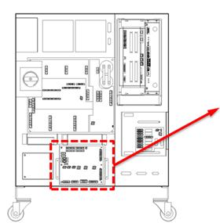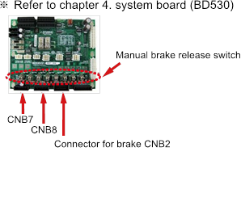
(a) Hi5a-S controller
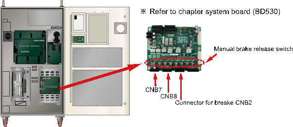
(b) Hi5a-N controller
Figure 1.193 Location of the Manual Brake Release Switch
If the corresponding axis¡¯s brake cannot be released, output status of the brake release voltage in the System Board need to be examined. Please remove the brake wiring (CNB2, CNB7, and CNB8 connector) and use the manual brake switch for the brake voltage¡¯s output.
Please measure the brake voltage of corresponding axis output (from the CNB2, CNB7, CNB8 connector) to check if it is over 20V. If there is an axis which has a voltage output under the 20V, System Board (BD530) is faulty. Please replace it.
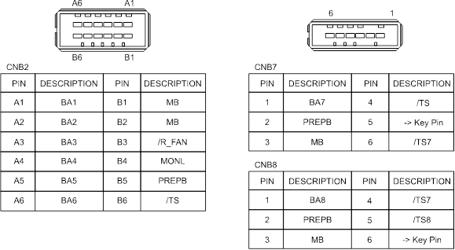
Figure 1.194 Pin Locations of CNB2, CNB7 Connectors
n Examine the error on brake¡¯s power supply.
If ¡°E0012 Brake power error¡± message is displayed at the same time, there is an error on Brake¡¯s power supply unit. From TP, please access ¡º[F1]: Service¡» ¡æ ¡º1: Monitoring¡» ¡æ ¡º2: Input/Output signal¡» ¡æ ¡º1:Private input signal¡» ¡æ ¡ºOverload (Brake Power supply)¡». If it is highlighted as yellow, the fuse for Brake (in the Electrical Module)¡¯s power supply has been disconnected. Please replace the fuse.
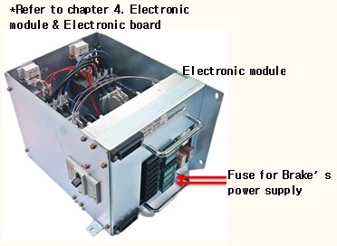
(a) Hi5a-S controller
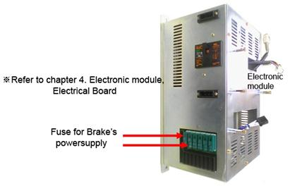
(a) Hi5a-N controller
Figure 1.195 Electronic Module
If the fuse is normal, please measure the Brake power supply (DC24V) from the System Board. There are 3 test pins at the center of the board. Use the TMB as a reference terminal and the TPPB terminal value should be over DC20V. If it is below 20V, the power supply unit that generates the power for the brake has an error. Please replace the Electrical Module.
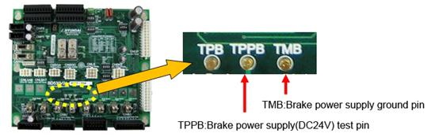
Figure 1.196 Brake Power Supply Test Pin
(3) Examine the wiring status.
Check if the motor wiring (U, V, W phase) has been short-circuit from the other wiring or ground lines (FG).
(4) Check if the rated load is used.
If the total weight exceeds the rated load, please refer to the Robot¡¯s specification and adjust the load to within the rated load.
(5) Position deviation setting level error
If the position deviation setting value is smaller than the next maximum measured value, please increate the setting value.
Maximum measured value of position deviation after few cycles of operation x 1.5
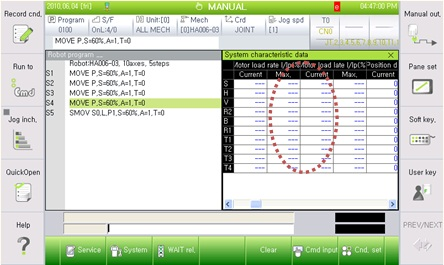
Figure 1.197 Monitoring Screen of the Maximum Measured Position Deviation Value from TP
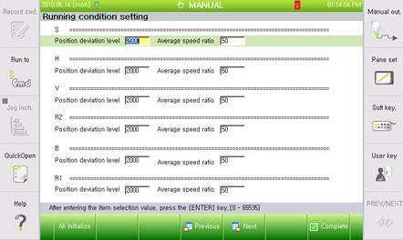
Figure 1.198 Modifying Screen of Position Deviation Value from TP
(6) Please replace other components.
Replace the component in order of Servo Board (BD544) ¡æ Servo Drive Unit ¡æ Motor to confirm the occurrence of an error¡¯.
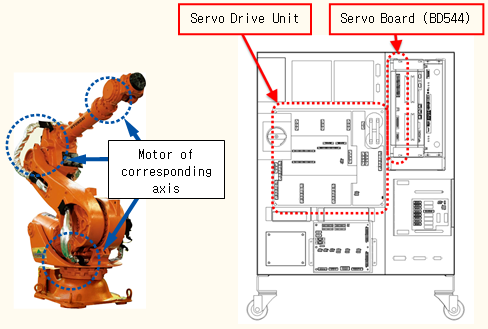
(a) Hi5a-S controller
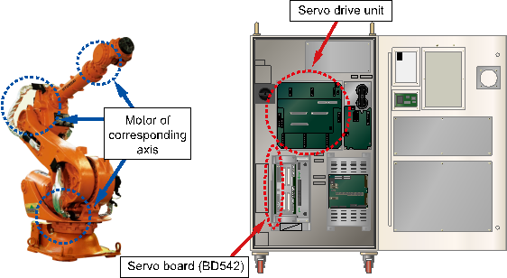
(b) Hi5a-N controller
Figure 1.199 Replacing other parts (such as servo boards, servo drive units, and motors)